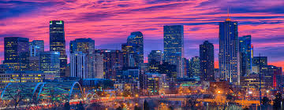

Some facts about our beautiful City of Denver, Colorado
Denver boasts the 10th largest downtown in America and one of the most exciting and walkable. Within a mile radius, downtown Denver has three major sports stadiums, the nation's second-largest performing arts center, three colleges, an assortment of art and history museums, a mint that produces 10 billion coins a year, a river offering whitewater rafting, more than 11,000 hotel rooms, a downtown theme and water park, downtown aquarium and hundreds of chef-driven restaurants.
Denver has more than 200 parks within the city and 20,000 acres of parks in the nearby mountains, including spectacular Red Rocks Park & Amphitheatre. The city has its own buffalo herd and every year plants more than 200,000 flowers in 26 formal flower gardens. Other mountain parks include Echo Lake, at the base of the Mount Evans highway – the highest road in North America – and Buffalo Bill's Grave on top of Lookout Mountain.